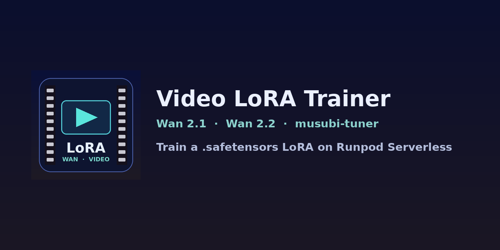

Video LoRA Trainer (Wan 2.1 & Wan 2.2)
Train Wan 2.1 / Wan 2.2 LoRAs with kohya-ss/musubi-tuner v0.3.6 on Runpod Serverless. Send a zip of videos or images and a trigger word; get a .safetensors LoRA on your network volume, Hugging Face repo, or S3 bucket. Default model: Wan 2.1 T2V 1.3B (public weights, fits 24 GB).
Deploy on Runpod HubGitHub repositoryREADMEllms.txtopenapi.yamlAGENTS.mdReleases
Quick start
curl -X POST https://api.runpod.ai/v2/$ENDPOINT_ID/run \
-H "Authorization: Bearer $RUNPOD_API_KEY" -H "Content-Type: application/json" \
-d '{"input": {"dry_run": true, "base_model": "wan-t2v-1.3b",
"dataset_url": "https://raw.githubusercontent.com/prilojject/runpod-video-lora-trainer/main/examples/datasets/tiny_wan.zip",
"trigger_word": "zxowl", "class_word": "figurine"}}'
- Always use async
/runfor training and raisepolicy.executionTimeout(the 600 s default is too short; a cold start may download ~13.5 GiB). - Put
HF_TOKENin a Runpod secret if you upload to Hugging Face; tokens in the job input are rejected. Default Wan weights are public. - Hub test: Wan 2.1 T2V 1.3B, 20 steps, 512 px, no samples, RTX 4090. 14B / Wan 2.2 need a 48 GB GPU and are not part of the official test.
Full documentation: README on GitHub. License: MIT. The Hub listing link works after Runpod's review.